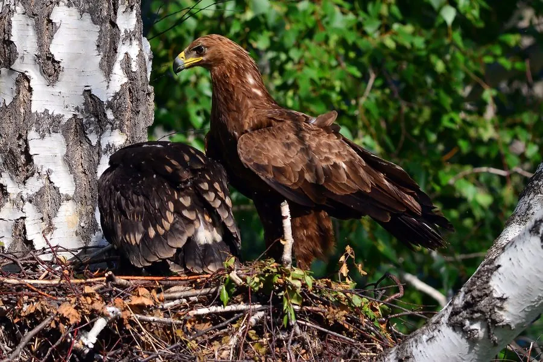

鸟类 · 动物界
乌雕 Clanga clanga

欧亚大陆的深色大型猛禽，通体黑褐、尾上覆羽有月牙形白斑，栖息于河谷森林和湿地，因种群下降被列为易危。
- 分类
- 门脊索动物门纲鸟纲目鹰形目科鹰科属乌雕属
- 栖息环境
- 河谷森林、湿地、草原与农田
- 地理分布
- 东欧、俄罗斯、中亚至中国东北和华北，冬季南迁至南亚和东南亚
- 保护级别
- IUCN 易危（VU）；中国国家一级保护动物
物种志
乌雕体长 59–72 厘米，翼展 155–180 厘米，体重 1.6–3.2 千克，雌鸟大于雄鸟。成鸟通体黑褐色，尾上覆羽有一块醒目的月牙形白色斑，尾羽有浅色横斑；幼鸟羽色较浅，背部和翼上布满白色斑点。
乌雕繁殖于东欧、俄罗斯、中亚到中国东北和华北，冬季南迁到南亚、东南亚和中国南方。它栖息在河谷森林、湿地、草原和农田，常在沼泽和水域附近活动，以野兔、黄鼠、蛙、鱼类和腐肉为食，也吃昆虫。雌鸟每窝产 1–3 枚卵，孵化约 42–45 天。由于湿地排水、森林砍伐、触电和盗猎，乌雕数量下降，被列为易危，在中国属于国家一级保护动物。
形态与习性
- 食性野兔、黄鼠、蛙、鱼类与腐肉
- 体长59–72 cm
- 翼展155–180 cm
- 体重1.6–3.2 kg
- 繁殖每窝 1–3 枚卵，孵化约 42–45 天
- 特征尾上覆羽有月牙形白斑
趣味知识
- 乌雕尾上覆羽有一块月牙形白斑，飞行时很醒目。
- 它喜欢在湿地和河谷森林附近活动。
- 乌雕在中国属于国家一级保护动物。